Status: This document is an abbreviated version of the complete Valueflows documentation. The linked complete documentation reflects the current ongoing work, while this document freezes the major release 1.0.0. This document includes the basic specification and explanatory documentation. For secondary documentation, such as further status, other contributors, examples, historical links, reference implementations, more algorithms, model tips, see the link above.
Valueflows supports the distributed economic networks of the next economy, to coordinate the creation, distribution, and exchange of economic resources.
The Valueflows vocabulary (ontology) is intended to support coordination and accounting of economic activity, with extra attention to experimental and solidarity economic networks, but also fully supporting conventional businesses and supply chains. It utilizes resource flows connecting many agents (people, organizations, ecological agents). These resource flows can include value creation, usage, and/or transfer.
As a flow-oriented model, Valueflows can coordinate whole networks as easily as one company, including regions and circular economies. These economic networks consist of independent economic agents collaborating to produce and distribute goods and services to meet human and ecological needs. For example, food, clothing, housing, education, health care. healthy soil, etc.
At its core, Valueflows implements an ontology called REA (Resources Events Agents). REA is an accounting and business process modeling ontology, which was initially driven by the advent of computers and the concept of normalization of data models. As such it represents a simple and elegant model for planning and recording real-world economic activity, as opposed to the conventional abstraction of debits/credits, although those can be derived. To REA we have added some concepts found in various economic groups (for example recipes, offers and requests), and ecological accounting (which is ignored in most accounting treatments), as well as made the ontology more implementation-ready and friendly to distributed protocols.
For example, the Valueflows ontology is designed to support
coordination of economic activity both inside and between organizations, an enterprise is not assumed;
reciprocity with or without money, money is not assumed;
ecological agents as part of the network; externalities documented as resource flows.
Namespace
The namespace for Valueflows terms is https://w3id.org/valueflows/ont/vf#.
The preferred namespace prefix is vf.
1. Core Model
This section is non-normative.
There are two basic patterns used in Valueflows: Resources, Events, and Agents (REA), Input-Process-Output Resource Flows (IPO)
These patterns are used in the three layers of Valueflows: Knowledge, Planning, Observation.
1.1 REA (Resources, Events, Agents)
The core is based on the REA (Resource, Event, Agent) ontology.
Agents are individual persons or organizations or ecological agents, who perform Economic Events affecting Economic Resources.
An Economic Event can take actions like produce, modify, consume, or use Economic Resources, or transfer them from one Agent to another, or transport them from one location to another.
Economic Resources would typically be useful goods and services, but could also be money, credits, energy, knowledge, designs, skills, CO2, methane, air, water, or almost anything else that some Agents can agree should be accounted for in their economic networks.
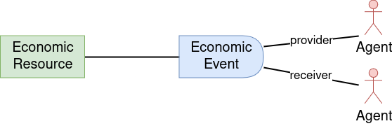
1.2 IPO (Input-Process-Output)
The IPO pattern is used to enhance the ability of REA to represent transformational flows of value. The flows are IPOs...
...Input-Process-Output resource chains, where one Economic Resource is the output of one Process and then becomes an input to another, thus connecting the processes into a flow. The Agents involved in each Process in the chain need to coordinate with the previous and next Processes about the quantity, quality, and timing of resource flows between them.
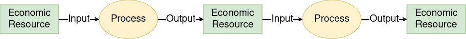
1.3 Putting them together
In general, how they fit together: Agents perform Economic Events that provide Inputs to Processes and take Outputs from Processes and move Resources from one Process to another. This forms a directed graph of value flows.
For example: a food network
...might include farmers, food processors, restaurants and bakeries, grocery stores, families to eat the food. And vehicles to move everything from place to place. Coordination might be needed between each of those stages: seeds and other inputs for planting crops, workers etc for harvesting crops. when are the crops ready for processing, when is the grain ready for milling and then for baking and then for people to eat, when is the fruit ready for pies, etc.
1.4 Flows without processes
Some flows do not involve processing, i.e. there is no transformation or transportation of Economic Resources. These flows simply transfer Economic Resources between Agents. One common example is an exchange of one Economic Resource for another Economic Resource between two Agents, as below, with two reciprocal flows based on an Agreement.
It can also be simpler, such as a gift, or more complex, involving many Agents. Also, these flows can mix in with Process-based flows.
For example: in that food network above
...food processors might purchase the harvested food from farmers, sell processed food to restaurants and stores... or families might provide land and labor for a farm and receive harvested food each week in return. That becomes part of the coordination.
1.5 Directed graphs of flows
Both process-based flows and flows without processes can create directed graphs from very local to global. Basically, a Process can have many inputs and many outputs. An Economic Resource can be created or increased by many flows, and can be decreased by many flows, over time. And flows without processes can fit inline with these, for example when a resource is created, then transferred whole or in part to another agent.
1.6 Traversing value flows
Value flows can be traversed forwards ("tracking") or backwards ("tracing"). Sometimes people use the term "provenance" when looking backwards towards the source of some resource, sometimes when a problem emerges (as in a disease outbreak from food), sometimes to know the quality of the resource (as in wanting local humanely produced food with lower ecological impact).
The data structures of Valueflows provide the ability to trace or track any value flow, no matter how long or complex. In the above diagram, following the arrows forward from an Economic Resource is to track what happened to the resource once produced, following them backwards from an Economic Resource is to trace what went into the resource plus all has happened because of the production and distribution of the resource.
The model also supports circular economies, value flows where resources come full cycle to be fed into the same set or other processes. We want to encourage recycling, re-use, and other ways to keep resources from becoming waste.
1.7 Types of flows
These are the main types of flows and how they relate as stages of value flows. They have basically the same core data structure, with differences related to their stage. Any of these types can be input or output to a process, or reciprocally related, as above.
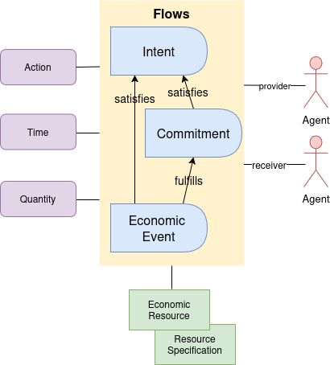
1.8 Levels of the ontology
Valueflows uses the layers of ontology documented by REA. Each of the layers follows the core patterns above. The following is a simplified conceptual diagram, not meant to be a specification.
The Knowledge level represents classification, policies, procedures, rules and patterns. This is where each network or community can configure the core concepts to fit their needs.
The Plan level represents offers and requests, schedules and agreements.
The Observation level represents what really happened.
The preferred namespace prefix is "vf". The linked open data namespace base URI is https://w3id.org/valueflows/ont/vf#, supporting the following formats.
https://w3id.org/valueflows/ont/vf.ttl
https://w3id.org/valueflows/ont/vf.html
https://w3id.org/valueflows/ont/vf.jsonld
https://w3id.org/valueflows/ont/vf.xml
https://w3id.org/valueflows/ont/vf.rdf
https://w3id.org/valueflows/ont/vf.owl
https://w3id.org/valueflows/ont/vf.nt
https://w3id.org/valueflows/ont/vf.trig
https://w3id.org/valueflows/ont/vf.n3
2.2 Formatted specification
This section is normative.
This is a formatted version of the vocabulary as defined in the RDF turtle file system of record, excluding the Named Individuals, the Classes needed to manage those, and the "layer" definitions. In other words, this includes the base ontological Classes and Properties for building with Valueflows.
Credit:
pyLODE3.2.1 with the OntPubprofile (modified to fit inside this larger document)
A document which contains all the needed detail related to the production process of a particular batch or lot, a resource processed in the same process(es) so that it is expected to be homogeneous.
A non-human being; or a functional group of non-human beings; or an ecosystem of living beings that includes non-humans; but it has agency and receives and/or provides economic/ecological resources.
An observed economic flow, which could reflect creation or a change in the quantity, location, accountability and/or responsibility, of an economic resource, whether material or not.
A desired or proposed or planned or estimated economic flow, usually with only one agent associated, which could become a commitment and/or economic event.
A functional structure, formal or informal, which can include people and/or other organizations, and has its own agency. Something called a group is an Organization in Valueflows if it has agency as the group.
Specifies the kind of economic or environmental resource, even if the resource is not instantiated as an EconomicResource. Could define a material or digital thing, service, medium of exchange or currency, skill or type of work.
The current amount and unit of the economic resource for which the agent has primary rights and responsibilities, sometimes thought of as ownership. This can be either stored or derived from economic events affecting the resource.
References one or more uri's for a concept in a common taxonomy or other classification scheme for purposes of categorization or grouping; or it can be one or more string classifications such as tags.
Used when an economic resource contains units also defined as separate economic resources, for example a tool kit or a package of resources for shipping.
The current physical location of an economic resource. Could be at any level of granularity, from a town to an address to a warehouse location. Usually mappable.
The amount and unit of the work or use or citation effort-based action. This is often expressed with a time unit, but also could be cycle counts or other measures of effort or usefulness.
The current amount and unit of the economic resource which is under direct control of the agent. It may be more or less than the accounting quantity. This can be either stored or derived from economic events affecting the resource.
The agent currently with primary rights and responsibilites for the economic resource. It is the agent that is associated with the accountingQuantity of the economic resource.
References one or more uri's for a concept in a common taxonomy or other classification scheme for purposes of categorization or grouping; or can be one or more string classifications such as tags.
References one or more uri's for a concept in a common taxonomy or other classification scheme for purposes of categorization or grouping; or can be one or more string classifications such as tags.
Additional economic resource on the economic event when needed by the receiver. Used when a transfer or move, or sometimes other actions, requires explicitly identifying an economic resource by the receiver, which is identified differently by the sender.
The current virtual place a currency economic resource is located, for example the address for a bank account, crypto wallet, etc., in a domain standard format.
The flow or process is complete or not. This is irrespective of if the original goal has been met, and indicates simply that no more will be done. Default false.
The planned or actual date, and time if desired, of a flow; can be used instead of hasBeginning and hasEnd, if so, hasBeginning and hasEnd should be able to return this value.
This group of intents contains unit based quantities, which can be multipied to create commitments; commonly seen in a price list or e-commerce. Default false.
This diagram includes all class and property elements defined in the system of record turtle file, for visual understanding of relationships.
To see the whole image with zoom-in-out, you can right click and select 'View Image' or 'Open Image in New Tab' or a similar command in your browser.
Diagram conventions
The notation is similar to UML class diagrams. Each arrow represents an additional property in the class at the beginning of the arrow. If there is an * at the arrowhead end, then many instances are supported (like a collection in object oriented modeling). If there is no *, then it should be assumed that only one instance is supported (like a foreign key in a relational model). Optionality is not implied in this notation.
The subordinate classes in the gray section at the bottom are not connected with arrows, so the viewer should assume that:
every property ending in "Quantity" or "Duration" is a vf:Measure (does not live on its own);
properties ending in "Location" that are physical locations are a vf:SpatialThing (can live on its own).
Inverse terms
To support cleaner representation in JSON / JSON-LD / RDF, as well as object oriented collections, in addition to the initial relational representation, we include some inverse terms, using owl:inverseOf in the source turtle file. If there is a name on each end of the line, there is both a regular and an inverse property defined in the specification itself.
Note that having an inverse defined and specifying cardinality of many are not connected. You will see * if logically there could be more than one of the objects on that end of the relationship, whether there is explicitly an inverse defined or not.
2.4 Diagram Explanations
This section is non-normative.
This further level of detail is a break-down of the full diagram on the previous section. The explanations are organized by class within subject area of the model.
2.4.1 Agent
The Agent subject area defines agents and their relationships in the Observation Layer.
vf:Agent
The Valueflows view of Agent is fairly broad, including people, organizations (formal or informal), and ecological agents such as non-human beings and ecosystems. But all of these have economic or governance agency of some sort.
Agents are key to the overall ontology, particularly the flows in Planning and Observation: Intents, Commitments, EconomicEvents, Claims, where each can reference a provider and receiver Agent. Proposals can be published to Agent(s).
There are 3 subclasses of Agent: Person, Organization, and EcologicalAgent.
2.4.2 Resource
Resources are defined in different ways, depending on their need and ability to be accounted for specifically. Every flow of any kind will reference a resource, represented either generally by a ResourceSpecification or by a specific EconomicResource. Resource classifications also assist in understanding or finding a resource.
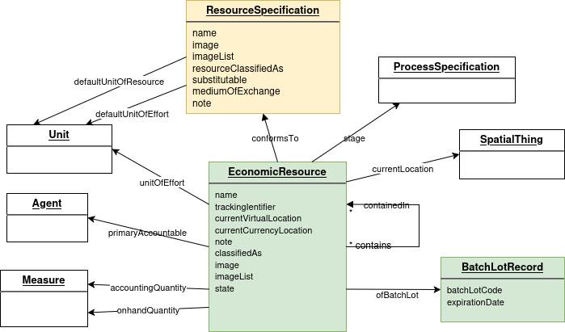
vf:ResourceSpecification
This specifies the kind of resource, to the most specific level needed. It also fills the space for the resource when it is not yet, or never will be, an actual resource. It can be used in and across networks to communicate the resource type needed. EconomicResource, as well as the resource concept referenced in flows (EconomicEvent, Intent, Commitment, Claim, RecipeFlow), conform to a ResourceSpecification.
vf:EconomicResource
An actual EconomicResource is created only by EconomicEvents. It is also updated only by EconomicEvents for all its accounting related properties. It becomes involved in a Process by being referenced by an EconomicEvent. It can appear on a Commitment or Intent if recording of a specific resource is needed. It must have a ResourceSpecification. It can have a stage and/or a state. It knows its primary accountable Agent at the current point in time. It can be contained in another EconomicResource. It can have human created codes, including a serialized identifer or a lot/batch identifier in a LotBatchRecord.
2.4.3 Putting flows into motion...
First, some necessary pieces.
vf:Action
An Action specifies the type of flow and what the flow will do or has done. EconomicEvent, Commitment, Intent, Claim, RecipeFlow have an Action. Actions are specified in Valueflows to cover the various ways flows affect resources. Actions have properties defined that can drive the logic to create or change EconomicResources when EconomicEvents are recorded, if desired.
vf:SpatialThing
Physical location, represented by SpatialThing, is mostly used as part of the information about agents, resources, and flows, although it can stand on its own if needed. It is primarily used for mapping. Although the relationships are not shown in the above diagram, the following are a SpatialThing: in EconomicResource, currentLocation; in Agent, primaryLocation; in EconomicEvent, toLocation; in Proposal, eligibleLocation. When something has a non-physical location, it will use a different property.
vf:Measure
Measure does not ever live on its own, it is a way to unify how quantities are represented in Valueflows. Although the relationships are not shown in the above diagram, the following are Measures: in EconomicResource, accountingQuantity and onhandQuantity; in EconomicEvent, Commitment, Intent, RecipeFlow, resourceQuantity, effortQuantity. Measure is a numerical value plus a Unit.
It is very helpful for interoperaability that the same units of measure are used as networks communicate. VF uses units defined by OM2, with some additional properties.
2.4.4 Flows in motion: Recipe
This set of Knowledge Layer entities together make a recipe for creating a resource conforming to a ResourceSpecification, or exchanging resources. It can be used to automate generating a plan in the Plan Layer, since it follows the same basic input-process-output graph pattern. It currently supports multiple recipes for the same ResourceSpecification. It also supports a Recipe for more than one RecipeProcess in a flow graph.
vf:RecipeProcess
This defines a process node in the recipe graph. A recipe can contain as many RecipeProcesses as it needs to produce the resource defined in the final ResourceSpecification. It can optionally conform to a ProcessSpecification. It will have at least one input or output RecipeFlow.
vf:RecipeExchange
RecipeExchange corresponds to the Agreement in the Plan Layer. It enables generation of plans that include agreements. It can contain as many RecipeFlows as needed.
vf:RecipeFlow
A RecipeFlow defines either an input or output to a RecipeProcess, and/or a clause of a RecipeExchange. RecipeProcesses and RecipeExchanges can be combined into one recipe if desired. A RecipeFlow through its Action defines how EconomicEvents based on it will affect the (resource of the) ResourceSpecification. If it defines a ProcessSpecification stage, then the flow expects a resource at that stage of production.
vf:Recipe
A Recipe defines a way to easily tie all the RecipeProcesses needed to create an output. It is needed if you are re-using the same RecipeProcess in multiple Recipes. If you are not re-using any RecipeProcesses in more than one Recipe, you may not need Recipe.
2.4.5 Flows in motion: Planning
Planning can be done with or without recipes. And planning is not always done, sometimes the economic activity is only observed, depending on the use case. This section is about operational planning, processes and agreements that are intended to be executed in this lowest level of detail.
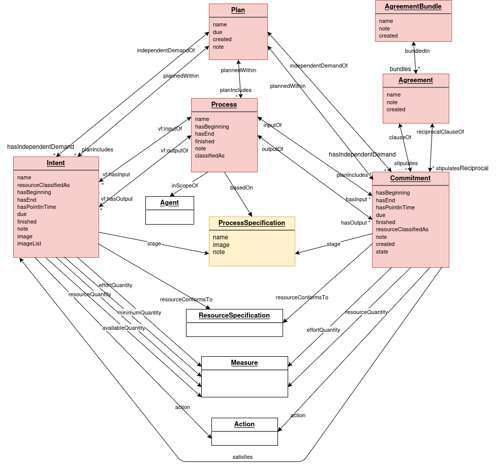
vf:Plan
A Plan is a collection of one or more operational Processes with input and output Commitments, and/or non-process Commitments (such as transfers), in the input-output-process graph pattern. Plans can also reference one or more Commitments that create the independent demand that provides the reason for, and final output of, the Plan (for example an order).
vf:Process
This section describes operational processes. A Process can exist both in the Plan and Observation Layers, or either one. If it is planned, then observed as an actual process, it remains the same Process. So it can have input and/or output Commitments, and/or input and/or output EconomicEvents. It can also have input or output Intents, if all or some of its flows are not yet committed to by an agent, but are expected to happen. Processes are usually (but not required to be) planned within a Plan. A Process can be based on a ProcessSpecification or not.
vf:ProcessSpecification
This specifies the kind of Process, to the most specific level needed. Processes can be based on a ProcessSpecification. It is also used as the stage of an EconomicResource that is created in stages, and is part of the logical identifier in those cases. RecipeFlow and Commitment can have a ProcessSpecification stage specified to indicate that the resource they expect is at a particular stage, for example "tested" or "edited".
vf:Commitment
A Commitment is a planned or scheduled flow. It can be input or output of an operational Process or planned directly in a Plan if it is a non-process flow. It also can be defined as an independent demand of a Plan, meaning it is creating what the plan is for. It can be a clause of an Agreement, even if also an input or output of a Process. It references something to define a current or future resource, often a ResourceSpecification, but sometimes an existing EconomicResource if that exists and is important, usually because it is one-of-a-kind. Like all flows, it references an Action that defines its future effects on the resource. It can satisfy one or more Intents or be fulfilled by one or more EconomicEvents. A Commitment references both a provider Agent and a receiver Agent, although it can be planned temporarily without both provider and receiver if there is a committed Agent assumed or immediately expected as part of planning. If it defines a ProcessSpecification stage, then the flow expects a resource at that stage of production.
vf:Agreement
An Agreement is a purposefully abstract term, so that it can represent many existing (or not-yet-invented) kinds of agreements, e.g. exchanges or income distributions. Its main purpose is to contain related Commitments in planning, usually reciprocal commitments. It can also be used to contain reciprocal EconomicEvents in cases where there has been no planning, such as point of sale.
vf:AgreementBundle
An AgreementBundle contains all the agreements bundled together for user purposes, for example multiple line items in an order.
vf:Intent
Intent is defined here as part of operational planning, but can also be primarily part of a Proposal, see below for those uses of Intent. An Intent has a provider or a receiver Agent, but not both. As part of planning, Intents can be entered directly or generated from recipe, as inputs or outputs to a Process, or as non-process flows, when there is no known Agent assumed to be the missing provider or receiver. An Intent can be satisfied by one or more Commitments, and/or one or more EconomicEvents if the Commitment does not exist. And as a flow, an Intent will have an Action. In operational planning, it will also reference a ResourceSpecification or EconomicResource.
2.4.6 Flows in motion: Offers and Requests
Offers and requests are published primarily to look for a reciprocal match, although they can also be gift offers or requests. Common use cases are e-commerce, timebanks, mutual aid, price lists, publication of help needed for planned work in a network.
vf:Proposal
A Proposal is a container of related Intents, and is an offer or a request, determined by the purpose. This also corresponds to whether the provider or receiver Agent is undefined in the primary published Intent. Proposals often have more than one Intent, either because there is a reciprocal Intent, or because more than one resource is being offered or requested together. An Intent can be re-used in more than one Proposal. A Proposal can be proposed to one or more specific individual or group Agents.
vf:ProposalList
A ProposalList contains all the proposals in a user-defined grouping, for example a price list.
vf:Intent
Intents that are part of Proposals can be more loosely defined than if they are part of a Plan, although planned Intents can also be part of one or more Proposals. For example, the note is often used to explain some of the defined fields when the offers/needs application mostly supports just text. But all Intents should have an Action, and either a provider or receiver Agent.
2.4.7 Flows in motion: Observation
The Observation subject area is where economic activity actually happens. The basic input-process-output graph pattern is again the same as for recipes and planning.
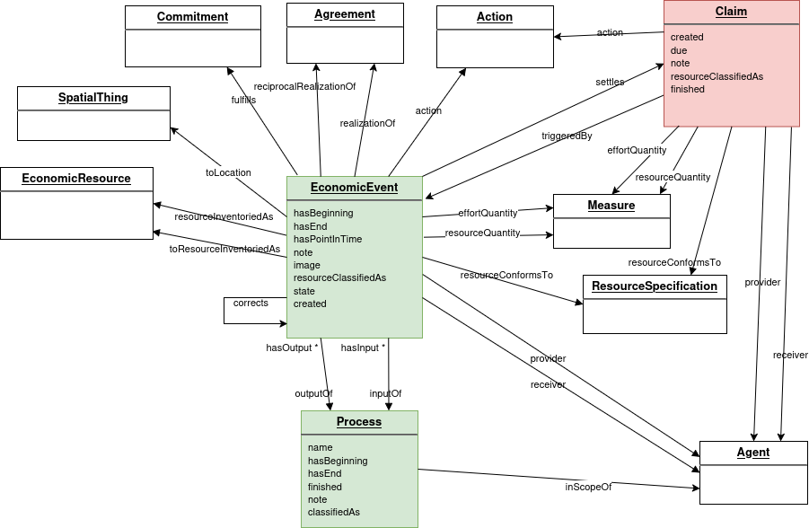
vf:Process
See the operational Process defined in the Planning subject area. Operational Processes are carried down to the Observation layer as they are executed, or can be directly defined for Observation if planning is not done.
vf:EconomicEvent
An EconomicEvent is the "real" flow, one that actually happened. Its behavior is governed by its Action. It actually affects an EconomicResource if one is defined as inventoried and referenced in the EconomicEvent, possibly including quantities, location, primary accountable, stage, state, containment. EconomicEvent has a provider and receiver Agent, and can be input or output of a Process, and/or part of an Agreement. An EconomicEvent knows its resource, either an EconomicResource or a ResourceSpecification. In some actions, for example transfers and moves, there can also be another EconomicResource on the receiver side. EconomicEvents can fulfill a Commitment or satisfy an Intent (where there is no Commitment) or settle a Claim. An EconomicEvent can correct a previous EconomicEvent, or reverse it completely.
vf:Claim
A Claim on another Agent is triggered by an EconomicEvent, according to rules agreed to elsewhere, although most EconomicEvents do not trigger a Claim, and if there is already a Commitment, a Claim is not needed. The Claim then can be settled by other EconomicEvent(s). As a flow, a Claim has an Action, provider and receiver Agent, and reference to a ResourceSpecification.
The OM2 vocabulary contains thousands of units of measure. It includes all the commonly used units of measure for business use, as well as scientific units, both common and obscure.
Quantities and units
OM2 also has a quantity called Measure, including both the numeric amount and the unit of measure.
Valueflows has created this same structure within our namespace, and added some additional properties for flexible labeling for business users. VF's Unit also has a OM unit identifier, referencing back to OM for cross-network unique identification of the units.
Quantities and Durations
As noted above, we are using vf:Measure, subclass of om:Measure, for the quantity properties in VF.
We decided to also use vf:Measure for durations, since OM2 has the time-based units needed for durations, as well as a Duration subclass of Unit. The thinking is that simplicity and consistent naming are more important than the ability to map directly to the owl:time vocabulary for durations.
Times
VF times are inspired by the owl:time ontology, but we have much more limited needs. We decided to pull them into the VF namespace, rather than directly referencing owl:time.
In terms of durations, although owl:time includes the duration concept, we are using OM, as noted above.
Locations
Currently there is not a unified standard location vocabulary, due to the varied historical development of these standards.
Our location data is a compromise between basic needs (latitude, longitude, and altitude), subclassed from the Basic Geo Vocabulary (WGS84), and more complex needs, for which we include a data reference to the extensive Geography information of the GEOSPARQL Specification.
Elements not included in VF
Valueflows is a generic vocabulary, and does not contain many domain-specific properties beyond those needed for coordinating economic value flows. So it will be normal to use additional elements, preferably from another standard.
For example, there are no food or bicycle specific elements. Much of this can be handled by the user-definable ResourceSpecification and ProcessSpecificaion. Applications might also want to consider using a faceted classification structure for this purpose.
There are also only minimal properties for classes that are on the "edge" of the vocabulary, and which have other more complete sets of properties elsewhere. For example, Agent is very sparse, and some applications might want more contact information, etc. EconomicResource has many identifiers that are industry specific (like GTIN) which applications might want to include. We are using rdfs:seeAlso to provide helpful sources for those kinds of elements. In addition, anything that is a rdfs:subClassOf a class from another vocabulary can inherit its properties.
3. Concepts
3.1 Agents
This section is non-normative.
The agent vocabulary describes people, organizations, and ecological agents.
Types of Agents
Types of agents:
Persons are human beings.
Organizations include formal or informal organizations of all kinds. This also includes groups, as long as they consider themselves to have some agency as a group.
The ecological agent concept is added to expand the scope of REA to do ecological and climate accounting, including impact of various resource flows on the environment.
(The concept of "Agent" could possibly in the future include software/AI-based agents like bots or self-driving vehicles, but this is controversial and somewhat complex. For now, we assume that there is a real agent behind these technologies.)
In Valueflows, we are talking about economic agents, agents who can create or modify or exchange value, and make agreements with each other - who have economic agency. Adding the Ecological Agent also expands the concept of "economic", bringing that kind of activity and impact, and even agency, out to whole living ecosystems, not just the human one.
If people want to define types of organizations (like cooperative, corporation, network, community, etc.) we provide a classification property which people can define as they wish. We do the same for the ecological agent (like ecosystem, forest, etc.).
We have defined the properties of Agents very minimally. There are a number of useful properties in existing vocabularies, such as foaf, vcard, schema.org, and others that can be used. Or projects can create their own properties as needed.
Agent Philosophies
We also want to acknowledge that some people prefer to think of themselves as independent and decentralized agents who interact in different places in the economy as individuals, and some people think of themselves more as members of different groups and networks and communities and interact more in the context of those groups and networks and communities. Many experiments are going on as people strive towards another economy. We want to support all these experiments, so want to support both of these ways of thinking and organizing ourselves. The agent vocabulary is very flexible, and will support these as well as current conventional structures.
So, if people want to form a group that has agency as a group, fine. If people want to consider that their group does not have agency as a group, also fine. Not all groups, and especially not all networks, will be economic Agents in Valueflows. That depends on the agreement of the people in the group, and what the group needs to do as-a-group. For example, does the group need to make agreements as-a-group with other agents? Or exchange resources with other agents as-a-group? Note that within the vocabulary, network formations will emerge, as agents have economic interactions with each other in the world. This does not mean that the network is necessarily a Valueflows Agent, but it could be, if the participants want.
3.2 Economic Resources
This section is non-normative.
The economic resource vocabulary describes resources and types of resources, defined broadly. They can include natural materials, goods and services, digital documents and representations, code, money, tokens, credits, energy, work, skills, CO2, methane, heat, air, water, soil microbiota....
Traditionally, an economic resource is defined by its utility, but also by its scarcity and its control by an economic agent. That definition is based on accounting for private ownership, and we believe is too limited.
Intellectual creations like designs are not scarce, yet they clearly are economic resources. They only become scarce when legally restricted by patents, licenses, and copyrights.
Air, water, and other products of nature are clearly economic resources, but they are not under the control of an agent unless they are legally restricted by ownership. However, by means of the invisible foot that accompanies the invisible hand, they are regularly degraded by enterprises, and not accounted for, classified as “externalities”.
We want to think of ourselves as participants in ecosystems, not competing enterprises. As such, we want to account for our effects on all aspects of our ecosystems.
And we want knowledge to be freely available.
Also, we prefer to think of use value, but economic resources also often have exchange value.
The difference between a resource and its specification/classification(s)
An economic resource is observable. Its specification or classification defines what kind of thing the economic resource is.
So, for example, most listings of things offered for sale on an e-commerce site are specifications, which can be searched using classifications. The one in a box delivered to your door is a resource.
Or the description of the book entitled "The Power of Babel: A Natural History of Language", ISBN-13: 978-0060520854,
is a specification. Your library may have two copies that you can check out. Those are resources.
Not all resource specifications will be instantiated as economic resources, i.e. some don't make sense as inventory, accounts, etc.
The difference between a resource specification and a resource classification
An economic resource or a flow can have only one resource specification in Valueflows. This defines the lowest useful level of the type or kind of the resource that is needed. The Valueflows vocabulary defines this as the ResourceSpecification. Note that often taxonomies and other references on the web can define very specific resource specifications at their leaf levels, and these can be used if the necessary properties can be found.
An economic resource or a flow can have any number of resource classifications. They are used to filter, match, or group economic resources. Resource classifications can be part of a taxonomy. That means they can be defined very broadly and generally and maybe vaguely, or they can be defined very narrowly, but fit into broader classifications.
So, for example, Herb might be the parent classification of Anise Hyssop, Goldenrod, Nettles, Red Clover, etc. Besides its usefulness in understanding taxonomies of resource types, this can be useful when one can define a general recipe that will work for many more specific kinds of resources.
People can use the multitude of existing taxonomies for resource classifications, or can also create their own as needed.
Resource classifications can also use other schemes, like facets or tags. It is left vague in order to be flexible.
The references to resource classifications are uri's or any string, and not otherwise defined inside Valueflows.
Identification and Behaviors of Resources
Here are three different kinds of resources from the viewpoint of identification:
serialized resources, where each individual instance has a unique identifier, like a car or a document;
lot-controlled resources, where each lot or batch has a unique identifier, but the lot or batch may contain many individual instances; and
count or volume or stock resources, where individual instances are indistinguishable in the computer system, or in the case of fluids, only exist on a molecular level.
Serialized resources would fit the direct identification pattern. Lots can be split up, so the identification of a subset of a lot would require some other properties, such as location. Stock resources can only be described indirectly, by means of some combination of properties, such as specification and location. (Location is a complex ontology of its own: for example, in warehousing, a location is often composed of warehouse:room:aisle:row:tier.)
Moreover, identification of resources will depend on scope and purpose. We want to allow each scope or context to define resources that they have relationships with, according to the combination of properties that works best for them, which might include which agent has which relationship with a resource.
And then in the "independent view", for larger-scale analysis of resource flows, or for example for lot tracking for public health issues, different combinations of properties might be needed.
Batch, lot, tracking identifier
All of these are used for tracking and tracing, because they are the lowest level for which there is that kind of information. They are pre-computerization, and almost always still found on the item itself. Even with computerized production information, they can be helpful in bridging missing flow information. Also, often a resource originated elsewhere, and the best way to get information is to use the batch, lot, or tracking identifier to query that information.
The tracking identifier of the Economic Resource is used for serialized resources. For manufactured items it is often called a serial number even though there are often letters included, but it also could be a unique identifier of a document, for example.
Batch and lot are sometimes used interchangeably, and sometimes not, and there are nuances of definition in different sectors. In Valueflows, they are stored and used in the same way. Unlike tracking identifier, there is a separate data record kept for batch and lot. We have defined minimal information, but some sectors require quite a lot of information to be kept with the record. Much of it can be derived elsewhere in the data, but often it is stored directly on this record, which is called a Batch Manufacturing Record in some industries. It can include production and expiration dates, certifications, environmental factors, testing results, etc.
Substitutability
This defines if any resources of that specification can be freely substituted for any other resource of that same specification when used, consumed, traded, etc. For example, one container of "B9R-1-red DLP resin photopolymer" is probably substitutable for another container of the same photopolymer. While each resource for a resource specification called "English-Spanish translation" is probably not substitutable because each will be a different document.
Unique identifiers for resources
This can vary. And people can be allowed within some boundaries of agreement to specify which combination of other properties would constitute identifiers.
Here are some examples from manufacturing situations:
Unique identifier = an assigned serialized identifier, which is unique across manufacturers, due to agreements in an industry. Examples are computers, vehicles, and other equipment.
Unique identifier = resource model + lot identifier + location + owner: so in other words, the owner of the rights was part of the unique identifier of the resource, and if the resource got transferred from one owner to another, the first owner's resources would be decremented, and the second owner's resources would be incremented.
Note in the last case, a transfer of rights means a different resource. This is common with resources that are not serialized, where one logical resource has a quantity greater than 1, and the individual instances are substitutable. (Think nuts and bolts, grain, strawberries, bottles of beer in cases, etc.)
Stage and state
Sometimes part of the logical identification of a resource includes:
stage: the ProcessSpecification of the most recent process the resource was output from, such as "test"
state: the state of the resource on output from a process, such as "failed"
Stage is used when the same identified resource passes through multiple processes in its lifetime, and that information is needed by the next process to determine which resources can be valid inputs. For example, in creating a translation, you might have one translated document pass through translation, editing, proofreading, and formatting stages. You don't want to bring that resource into the formatting stage until it has been proofread, for example. Or you might have a testing stage for a component or product, in which case you don't want to consume or transfer the resource until it both has been through the testing stage, and had a pass output state.
These can be defined on the recipe and/or the plan, showing where an input flow expects a certain stage and/or state of a resource. In that case, Dependent demand planning will select only those resources that fit the specified stage and state. In user-interface forms for adding process input EconomicEvents, if the use case uses stages and/or states, the input event form should query EconomicResources for required stage and/or state when offering selections of possible input resources.
An alternative to using staged resources is to have different resource specifications, and therefore different identified resources at each stage. This eliminates the extra complexity of the stage model, but also means you can't tell that the same resource is passing through stages during its creation. Just a trade-off, both are valid.
Medium of exchange
This gives the opportunity to specify if a resource is a currency, money, token, credit, etc., anything used as a medium of exchange, as opposed to being used as direct value in and of itself to people's lives. This can be helpful for limiting selections in user interfaces, as well as for validation.
Inventory
Economic resources (little-r, not confined to the term EconomicResource) can be inventoried, not inventoried but could be, or it doesn't make sense to think about inventory. If a resource is not inventoried, it is generally not instantiated in the software as an EconomicResource, but defined using resource specification and other properties, such as the accountable agent or location.
Inventoried: You want to keep track of it, its changes in quantity, and how many you have right now.
Not inventoried: You could keep track of it, but it isn't worth it. This usually happens for quantities of small or hard to measure items that are obtained in bulk, like solder or bolts. In this case, you have to look at the actual resource to see if you need more, the data won't tell you.
Not applicable: This is for types of work, services, and other resources where it just doesn't make sense.
Note here we are using the term "inventory" but this also applies to money, credits, etc. in an "account", i.e. it can be incremented or decremented by economic events, and maintains both an accounting and onhand balance.
How resources relate to events
In the original REA ontology, an Economic Event is a change in the quantity or in the rights to an Economic Resource performed by Economic Agents. An event is also defined by its behavior in relation to the resource (consume, use, produce, transfer, etc.).
Some people use the terms "stock" and "stock flow". In Valueflows, a stock is a resource; a stock flow is an event. (Note the term stock is too limiting, since a resource could be digital, like a document or media file.)
An event can trigger incrementing or decrementing a resource. Sometimes it does neither, as in the case of using a piece of equipment or citing a design. But in any case, the quantity of a resource related to the event is not a resource itself, it is just a property of the event. For example a resource could be 100 widgets on a pallet, lot number 1234. If 10 of those widgets are consumed in a process that makes something out of them, that is an event: consumption of 10 widgets of lot number 1234. The 10 widgets are not considered a resource in their own right, and especially not an EconomicResource. Rather the event triggers the decrement of the original resource of 100 widgets, which now has quantity of 90.
For serialized or uniquely identified resources, if the logical and technical unique identifiers are not changed by an event, such as moving a vehicle to another location without any changes to its accountable agent (and assuming location is not part of the logical identifier), the resource does not behave like a stock and is not decremented or incremented.
All economic information in an Economic Resource must be initially put there by an Economic Event. Non-economic information (note, image, etc.) can be updated on the Economic Resource directly. Economic information is anything that might affect periodic accounting or financial reporting or the identification of the resource. In this way, there is always an immutable detailed time-based record of that kind of information. And there are not excessive economic events for only non-economic updates.
Note that the economic information is therefore derived information, and could be re-calculated as needed by iterating through the Economic Events. But that could have performance issues, so isn't generally recommended.
How resources relate to transfers
Two different kinds of "inventorying" of resources are affected by transfers.
quantity of the resource where the agent has full (human realm) rights and responsibilities, irrespective of custody
quantity of the resource where the agent has custody or physical possession, irrespective of rights, more of an operational focus
We define two current quantities on the economic resource for these two concepts, accounting quantity for the first and onhand quantity for the second.
For example, in vendor-managed inventory, the vendor owns the inventory so they see it in their accounting quantity; but the store sees it in their onhand quantities. Or for inventory being shipped FOB source, the intended receiver owns the inventory and sees it in their accounting, but the goods are actually onhand in a truck.
How resources relate to each other
If one resource contains other resources, the contained resources are part of, or make up the larger resource.
For example, a bank account might contain a number of "virtual accounts" that a group manages itself, outside the bank's knowledge. Or, a tool maker might make several different kinds of tools, which they treat as separate resources; but they might package some of those into a tool kit, also a resource.
Sometimes contained resources cannot be directly accessed, sometimes they can, depending on the use case.
Material resources can't be contained in more than one container resource at the same time, but we've left that open to allow for digital resources to be contained in more than one container resource.
3.3 Flows
This section is non-normative.
Value flows (you could also call them resource flows) are a fundamental construct in the Valueflows ontology. They put the economic activity into motion.
Kinds of Flows
The kinds of flows form a progression from defined to potential to scheduled to realized.
Recipe Flow
Recipes are used to create plans, and the Recipe Flow can create a corresponding Intent or a Commitment in a Plan, depending on if all the agents are known and on the level of certainty of the planning.
Intent
Intents describe potential future events which have not been agreed to by other agents, such as offers and requests. Intents are often used for discovering another agent to participate in a desired event. On the process side, planned work could be an Intent, but planned work that some agent committed to do is a Commitment.
Commitment
Commitments describe potential future events which the involved agents have already agreed to pursue. Commitments can be considered contractual promises from one agent to another. Commitments can be thought of as plans for Economic Events, and Economic Events can fulfill Commitments. Commitments can satisfy Intents.
Possible gray area between Intent and Commitment
When making an operational plan, where there isn't really a question of some agent stepping up to commit or being assigned, and no published Intent is needed, then Commitments can be used, even though there may not be an agent committed yet. The criterion can be thought of as firmness of plan, not commitments of agents. Basically, sometimes making a plan takes some time, so during that activity, if Commitments are not assigned, it is OK, better than adding unnecessarily to the machinery needed to make a plan by using Intents. On the other hand if publication of the flow is needed to find an Agent to commit, then an Intent is used, so it can become part of a Proposal.
Economic Event
Economic Events describe past flows, something observed, never some potential future event. They can fulfill Commitments or satisfy Intents (when there is no Commitment).
Claim
Claims resemble Commitments, but are initiated by the receiver, not the provider. If there is not an existing Commitment, an Economic Event can trigger a reciprocal Claim, based on an agreement. Even then, Claims sometimes do not have to actually be instantiated, often they can be implied from an Economic Event and an agreement if that information is clearly available. S
Timeline, plans and observations
The figure below shows that Economic Events have to be observed and for that reason only appear as records of the past. Future plans get represented with Intents and Commitments.
Matching Intents
Often agents will start their plans independently and record their initial intents. Later once they make a Commitment with another agent, it will represent a specific shared part of their plans. For that reason any Commitment can result in satisfaction of the providing agent's Intent as well as satisfaction of the receiving agent's Intent.
How to minimize data entry requirements
This may seem like a lot of data entry, since the flow records in these transitions are maintained over time. In practice, since the patterns of the flows are very similar, you can make use of that to directly pre-fill data entry forms or generate the initial data in the next phase. What this could look like:
On the highest layer, recipes can be used to generate plans including Processes and Commitments and/or Intents. This is usually done when production processes are involved, but can also be for exchange. Recipes could on some use cases be used directly, but most often the quantities are different on the plan. A recipe should be set up to produce the lowest natural batch quantity. The quantities and times can be multiplied out (or calculated as makes sense for the use case) to create a scheduled plan which is saved. Sometimes Commitments or Intents in generated plans need to also be tweaked a bit directly.
We also intend that in future versions there will be a higher level that groups recipes by economic function, so that an organization could just generate initial recipes from open libraries. Organizations could contribute to these libraries, creating a data commons that would help everyone using the vocabulary.
Or in case of direct exchange, Intent data can be used to prefill Commitment data, with a few or no changes needed. This could be from matching a request and an offer intent.
Often a person with Commitment data displayed as default can just indicate that is what happened and an Economic Event can be created. Or perhaps minor changes are made first if the reality doesn't exactly match the plan.
Actions
All types of flows use the same set of actions, which define what the flow does and how it behaves in relation to resources. You can find detailed documentation on actions in the next section.
Quantities and Times
Quantities are used for counting, such as:
Exchange/transfer
Resource increment and decrement
Recipes, how much or many relatively goes into and out of a transformation process
Times are used for coordination and scheduling, such as:
Calendar availability
Planned timelines
They can be used together for analysis and reporting, such as:
Accounting totals (quantity) within accounting period (time)
Quantities can be any needed unit of measure, including counts, volumes, weights, etc., including time-based units like hours. Time can be a beginning/end date-time (an interval), or a point in time, or a due date-time. If a point in time is recorded, but not beginning or end time, an application should return that time as the beginning and end time if asked. If only date is needed, the time portion can be left as all zeros.
Note that creating a plan from a recipe may require scaling both quantities and calendar times, either simple multiplation or a more complex algorithm.
Sometimes a quantity is expressed in time-based units, like "I worked 6 hours", or "we used this machine for 8 hours". These flows also may have a related time, like "I worked from 10am to 4pm", or "we used this machine from 8am to 4pm". In these examples, the quantity is used for accounting, exchange, recipes. The time is used to schedule and coordinate the work or machine usage.
Sometimes a situation may call for a "compound quantity", like "Number-per-Year".
Correcting Events
Economic events are immutable in accounting practice, since at any time they could have been reported formally. To correct economic implications of an economic event, you need another economic event, which can be related to the first one with the relationship corrects. The correcting event can have a negative number. It can either completely back out the original event or adjust it.
3.4 Actions
This section is non-normative.
All flows (Economic Event, Commitment, Intent, Claim, Recipe Flow) use an action property to designate what the flow is doing and how it will affect or has affected an economic resource (or not).
The actions contain data that defines how they will behave relative to a user interface, and relative to the effects on economic resources. This enables the behavior to be data-driven if desired.
Action Definitions
We have defined a core set of actions, but expect that this will be extended with some others. If extended, we recommend that they be defined as part of this or another formal vocabulary so that all can use them and assume the same meaning.
produce - A new resource is created in the process, or an addition to an existing stock resource of the same type is incremented. produce is used in manufacturing of goods, but also in any kind of creation of a material or digital or energy resource.
consume - Most often, an input ingredient or component is transformed into the output(s) of the process. Or the input resource can be just used up during the process, like energy. After the process the specified quantity of the consumed input is gone.
use - Most often use is employed for equipment or tools that are used in a process, but not consumed. After the process, the piece of equipment of tool still exists, but during the process, it is unavailable. The unavailability can be useful to know if the resource must be scheduled, or if one needs to know how much the resource is used.
cite - cite is used when a resource is input to a process, but is neither used nor consumed, and remains available during the process. Examples are a design file or a scientific paper, any documented knowledge, which is cited so that the agent(s) responsible for the resource receive credit.
work - work refers to labor applied to a process. There is generally no identifiable resource involved, only the provider agent. In this case, the type of work or skill involved can be identified by a resource specification. A possible exception would be if the agent's work schedule is kept on a calendar, representing when the specific agent is available to work.
pickup - The transported resource or person enters the process; the same resource will appear later in an output of the process.
dropoff - The transported resource or person leaves the process; the same resource or person appeared in an input of this process.
accept - This is used as input to a process involving repair, modification, testing, or similar of a resource. The same resource will appear in the output of the process. It is sometimes a bit of a gray area when to use accept/modify vs. consume/produce. The choice is based on the need to have the same identified resource before and after the process. Generally if the resource is involved in a series of processes to create it before anything else happens to it, accept/modify is appropriate. If the input resource and the output resource need to be identified as different resource specifications for any reason, then accept/modify is not appropriate.
modify - The identified resource that was accepted into a process appears in the output of that process, with modifications made. Note not all modifications require a physical change, for example quality testing. In all cases though, it matters that the resource has gone through that process, and the stage of the resource (the process specification of the process) is then used as part of the logical identification of the resource when the resource is requested as a process input or for a transfer.
combine - A resource is put in a package or a combination resource; the same resource might appear later when it is separated. Examples are packing one or more resources for transportation or storage, creation of a kit resource, a herd of cows. The combined resource is still identified in the system, but is containedIn the package or combination resource, which would be usually produced in the process. When a resource is containedIn another resource, it could be still available, depending on the use case. Note that packing materials or containers which will continue to have their own identity later are also combined in the process; if not, they can be consumed.
separate - A resource is removed from a package or a combination resource; the same resource appeared as input earlier in another process when it was combined. When the resource is separated, it loses its containedIn reference.
deliverService - A new service is produced and delivered as output of a process. A service implies that an agent actively receives the service at the same time as it is delivered. Services are not tangible, so would not create or increment an inventoried resource. Services are perhaps most often delivered directly to an agent. But unlike other actions, sometimes the service is at the same time being delivered into another documented process, in which case it can be output from a process and input to another, at the same time.
transferAllRights - This action gives full (in the human realm) rights and responsibilities to another agent, without transferring physical custody. People might call this "ownership"; or it might be considered "stewardship" or similar. This occurs instantaneously, and does not involve documented physical transfer.
transferCustody - This action gives physical custody and control of a resource to another agent, without involving rights. The physical custodian often has responsibilities associated with custody, however. Examples where transfer of custody is useful are loaning a resource to another agent, or when a resource is transferred to have a service performed by another agent, like transportation or repair.
transfer - This action gives full (human) rights and responsibilities plus physical custody, combining the last two actions for simplicity.
move - move changes the location (and possibly the identifier, if location is part of the logical identifier) of a resource, but does not transfer agent rights or custodianship.
copy - A new resource is created for the receiver, an exact copy of the original provider resource, used for digital resources.
raise - This action adjusts a quantity up, used either when a computer system is brought up and existing resources must be entered with a beginning balance, or when an inventory count in the real world shows that the quantity in the computer system is too low. When it is known how a resource was obtained, it is preferable to use the real action.
lower - This action adjusts a quantity down, used either when a computer system is brought up and existing resources must be entered with a negative beginning balance (very rare!), or when an inventory count in the real world shows that the quantity in the computer system is too high. When it is known how a resource was lowered, it is preferable to use the real action.
Action Behaviors
The behaviors that are included on the tables below are also defined as Action properties so that computer systems can be "data driven" in this respect if desired.
Event Effects
eventQuantity - Either only resourceQuantity or only effortQuantity or both make sense on an economic event with this action. The action use provides for both because there can be a requirement for use of some number of a resource (or resource specification) for some time or other effort unit. Also work when more than one person is involved in the effort quantity. (We don't consider the person a resource in this case, it is a person's skills or available labor power for the work.)
inputOutput - An event with this action can be input of a process, or output of a process, or should not be related to a process. The event with the special case outputInput is basically an output of a process, but can sometimes also be an input to another recorded process, at the same time as it is an output. This is because services imply delivery as they are created.
pairsWith - These pairings indicate that events with these actions will be input and output of the same process, and imply reference to the same economic resource.
createResource - An event with this action generally should support the options to create a new resource or to increment an existing "stock" resource. This will be a choice the user (or possibly specific application rules) must make, there are no rules defined in the vocabulary or data, and it depends on what actually is done operationally, and how agents choose to identify and manage their resources. It is also possible that neither will occur, if the agent does not inventory this particular resource for whatever reason. If a resource is created by the actions with optional, it is the resourceInventoriedAs; if with optionalTo, it is the toResourceInventoriedAs.
Note: Any action that can create a new resource can alternatively affect (almost always increment) an existing "stock" resource.
Resource Effects
accountingEffect - If there is an inventoried resource, this defines how the economic resource's accountingQuantity is affected by the event's resourceQuantity.
onhandEffect - If there is an inventoried resource, this defines how the economic resource's onhandQuantity is affected by the event's resourceQuantity.
For both AccountingEffect and OnhandEffect, the main options are decrement (subtract from), increment (add to), or no effect. For actions with the option decrementIncrement, the resourceInventoriedAs should be decremented (if there is one);and the toResourceInventoriedAs should be incremented (if there is one). For actions with the option incrementTo, the toResourceInventoriedAs should be created/incremented, and the resourceInventoriedAs should be left as-is.
Note: The event's effortQuantity does not affect economic resources.
Note: The actions use and work are time-based actions, either with or without an explicit schedule. Although not defined in VF, if a calendar schedule is documented as connected to the economic resource, then those economic events could possibly "decrement" that calendar schedule in some way.
locationEffect - For this action, if the economic event's toLocation exists, then the affected economic resource's currentLocation should be set to the same location. For new, the resource's location should be set only if it is a new resource. For updateTo, the resource is the one in toResourceInventoriedAs. For update, the resource is the one in resourceInventoriedAs.
containedEffect - This applies to the actions that deal with resources contained in other resources, and applies to the resourceInventoriedAs. The update option sets the resource's containedIn resource, which can be referenced in the event's toResourceInventoriedAs; the remove option nullifies the resource's containedIn resource.
accountableEffect - If there is an inventoried resource, these actions should set the resource's primaryAccountable agent using the event's receiver agent. For new, this applies to new resources created by the event (otherwise the receiver and the primaryAccountable should already match). For updateTo, the resource updated is the toResourceInventoriedAs.
stageEffect - For actions with stage, if the process which the event is output of is based on a process specification, set the stage of the resourceInventoriedAs, or of the new resource if one is created, to the process specification.
stateEffect - If a resource is created or updated by the economic event, if the state is included in the event, set the state of the resource to the event state. If update the resource is the resourceInventoriedAs; if updateTo the resource is the toResourceInventoriedAs.
Behaviors by Action
The above behaviors are shown in the following table by action.
To make the diagram bigger, you can right click and select 'View Image' or 'Open Image in New Tab' or a similar command in your browser.
*In the above chart, the notApplicable values are not included, for easier viewing.
Implied Transfers
Implied transfers can happen when the provider and receiver agent are different. The transfer (or transferCustody or transferAllRights) behaviors and implications should be applied in addition to the behaviors and implications documented for the non-transfer action. See Implied Transfers in Transfer Concepts for details.
3.5 Processes
This section is non-normative.
Process spans the Plan and Observation layers. I.e. intents, commitments, and economic events can all be connected to the same process as it moves through planning and observation. Or for some use cases Process is used only in one layer.
Processes and resource flows
By Process, we mean an activity that transforms inputs into outputs. The outputs might then become inputs to other processes, forming networks and chains. Those chains may be circular, where an output from one process becomes an input to another process that occurred previously in the same chain, supporting circular economies. Processes are a key piece of the structure where we can follow a whole value flow.
For example...
A farming process takes compost, soil, seeds, water and human work as inputs, and transforms them into grains, nuts, fruit, or vegetables. Those ingredients may go to kitchens that create dinners for people to eat. Some of those ingredients may be pared off in preparation, or spoil, or be left on plates. Those leftovers go into compost, which starts the process chain over from the beginning.
Or for a bad example: a CAFO (Confined Animal Feeding Operation) produces a lot of manure. They put manure into big lagoons, which drain into the water table, and come back up in people's drinking water, causing diseases, for which the people become inputs to hospital processes.
One of the inputs to the CAFO process is antibiotics. The animals are filled with antibiotics because they get sick in the CAFO environment. And the antibiotics are also an output, mixed in with the manure and meat.
The antibiotics then breed resistant bacteria, which end up in the people, and send them to the hospital, and then kill the people, because the common antibiotics no longer work. And the resistant bacteria remain in the hospital to kill other people.
Connected processes enable us to see cause and effect, if we want.
Defining operational processes
The processes considered in this version of Valueflows are operational, i.e. reflecting on-the-ground production or modification or transportation of economic resources. This means they are the lowest level that makes sense to define a process and the intermediate resources for the use case. Valueflows does not provide for steps within a process explicitly, so that could be done as part of the note field, or just documented separately. Any process that has steps that require different resources should be considered for breaking into smaller processes. Any process where the outputs will go separate ways is a good candidate to be defined as a separate operational process, especially if the outputs will be consumed at different times. Defining processes might be a science, but it feels more like an art because there are so many different situations.
Valueflows does not yet provide for summary level processes above the operational level, whether pre-operational (like budgeting) or non-operational (like bioregional planning). But work has been started and that is on the roadmap for a future release.
How to think about processes vs. their flows
This can be confusing. Sometimes people tend to think about the flows as where some processing is happening. This is understandable, since flow names (actions like consume or produce) imply some kind of activity. However, it is appropriate in the Valueflows model to think about all the transformations and transportation happening in Processes. The flows fundamentally define what happens to resources because of the activity in the processes. For example, there would never be a flow with an action of "plant" or "harvest", even though seeds are planted, and vegetables are harvested. Planting and harvesting are Processes. Seeds resources are decremented, vegetable resources are incremented.
Co-products and by-products
Usually processes have one output, but not always. Sometimes there are co-products that have somewhat equal value. By-products tend to define something very secondary. Sometimes there are co-products or by-products that provide something useful, such as plastic shavings being put back into the melting pot for continued production as input. Sometimes there are unintended by-products, resources that are known but not useful or are harmful.
Valueflows does not distinguish between "good" and "bad" resources created by processes, as that is conditional and can be subjective. On the other hand, this pattern gives the opportunity to record and understand harmful "externalities" from producing and transporting resources. Documenting these gives people a chance to try to figure out how externalities can be made useful in some other condition, or how to mitigate harmful externalities as much as possible.
Process example
The following is an example low level process, first with commitments (planned), and then with economic events (what actually happened). Both diagrams show the same process (same instance).
You can see it took a little longer than planned because Alice dropped a pie, which went into the compost.
Returning processes with its connected flows
Intents, commitments, and economic events can all be inputs and outputs of one process. In addition, economic events can fulfill commitments, and commitments or economic events can satisfy intents. In other words, there are two ways a commitment or economic event can be connected to a process, either directly or indirectly through the fulfills or satisfies relationship. A data store could either store both relationships or not. So, what should happen if someone requests all the economic events for a process? The answer is they should see all events, whether they fulfill a commitment connected to that process or not. Likewise for commitments or economic events that satisfy an intent. So, irrespective of what is stored under the covers, all flows of a certain type must be returned when requested.
3.6 Transfers
This section is non-normative.
Transfer concepts
One concept of transfer is an activity that re-assigns rights for an economic resource from one agent to another. A second concept is an activity that operationally changes physical custody or possession of an economic resource from one agent to another, without affecting rights.
Note that a transfer is a one-way activity. Two or more reciprocal transfers form an exchange, and are connected in Valueflows by an Agreement.
We think that now, and more so in the future, there will be more gradations of rights and responsibilities for resources than are sometimes considered now. For example, as a society we may decide that we should take more responsibility for recycling or upcycling resources at the end of their useful life for us, or not wasting them. The concept of "ownership" may transition more into "stewardship" in a concept of the world that does not put humans in a position of controlling the world's resources or abdicating responsibilities to the ecosystem in the name of ownership. So, we are for the most part avoiding talking about ownership in this vocabulary, or any of the possible gradations and combinations of rights and responsibilities, leaving the concept of rights flexible.
Transfer examples
For example, perhaps some agent has many apple trees, and plans on pressing apple cider. Another agent has an apple press and agrees to transfer use of the press (a resource). The agent with the trees might transfer a portion of the apple cider to the agent with the press. The use of the press involves some rights (to use the press for some period of time) and responsibilities (to not run it beyond its capacity and to clean it up before returning it).
Or in a library, a book can be checked out, a transfer of custody from the library to the reader. The agent who checks it out can read it and is responsible for caring for it and returning it on time, another transfer of custody.
Or let's say that a community has farmland and equipment held in common. The community transfers custody for the land and equipment to some farmers to use and take care of. The community also transfers seeds every year to the farmers, enough to grow the food the community needs. During the year, the harvests are distributed (transferred) to the community members for their consumption. In reciprocity, the community provides for other needs of the farmers (transfers resources).
Implementation note: Different networks may choose to handle namespaces and identifiers at different granularity. This also may depend on the technology used. So one network may have separate namespaces for the nodes in the network; another may have one namespace for the whole network. In the latter case, an implication on transfers is that the provider agent and the receiver agent may use the same resource identifier for resourceInventoriedAs and toResourceInventoriedAs, even though the primary accountable has changed.
Explicit and implied transfers
In Valueflows, several actions can involve the transfer concepts and behavior. (For more detailed information, see the Actions section, especially the Behaviors by Action.)
The explicitly denoted transfers are:
transfer all rights (primary accountability: ownership, stewardship, etc.)
transfer custody (only the physical custody or possession)
transfer (shorthand for both rights and custody, since they often go together)
Some other actions can imply a transfer of all rights, a transfer of custody, or both. This shortens and sometimes simplifies the flows. But it is not at all required, it is fine to have separate transfer flows if that makes the use case more understandable.
The way to imply a transfer is to designate a different provider and receiver. It is not always true the other way though, a different provider and receiver does not necessary imply transfer behavior, usually because there is not an inventoried resource.
The following actions imply a full transfer of all rights and custody, when there is a different provider and receiver. The implication is that any behavior rules of the primary action plus the transfer action are implemented. And also the flow can be included in an agreement, for example paying for consuming a resource provided by a different agent in the receiver's process.
consume, produce
deliverService
The following actions imply transfer of custody only, when there is a different provider and receiver. Since the implied transfer is only custody, this would normally not be used as part of an agreement. But the behavior rules of the primary action plus the transfer of custody would be implemented.
pickup, dropoff
accept, modify
3.7 Exchanges
This section is non-normative.
The independent viewpoint
Here we look at exchanges of resources from an independent or neutral viewpoint (not the viewpoint of one of the Agents in the exchange). For example, from one Agent's viewpoint, the exchange may be a Purchase, from the other Agent's viewpoint, it might be a Sale. From the neutral viewpoint, it is an exchange of resources, with usually at least two flows of resources, from different directions. So for example, the seller might give some goods to the buyer, and the buyer might give some money to the seller. Or in a barter exchange, one agent might give the other some books, and the other agent might compensate with some cookies.
Exchange is ubiquitous on the internet today, with offers everywhere. In Valueflows, we track not only the offers and promises, but also the actual flows of resources in networks, in all directions. And we support exchanges that don't involve money as well as those that do.
Valueflows enables multilateral exchange agreements as well. Any number of agents can commit to flows where they provide something and flows where they receive something. This way creating a reciprocal cycle in the flows graph. So for example, Alice can provide apples from her orchard to Bob, who can provide accommodation to Claire, who can provide tutoring to Alice's children. Such exchanges can happen in infinite number of possible ways, as long as all agents participating agree on specific reciprocal cycle in the flows graph.
We also support non-reciprocal one-way transfers, such as in a gift economy. However, an exchange implies at least two transfers with reciprocity.
Exchanges and flows
Exchanges as modeled in VF actually are reciprocal flows, not resources directly.
For example, most timebanks exchange work for credits. The work event can be part of a process that produces something for some other agent. It is also part of an exchange in the timebank. The transfer of credits on the other hand, is not part of any process that creates or transports something, it is merely the timebank recording that one account was decremented and another account was incremented.
Exchange of work also happens in open value networks, where people record work events as input to many processes, and then when income is received for outputs of that work, people receive part of that income, in exchange for their work.
Another example is when a service is created as an output of a process, where that service delivery event can be considered an implied transfer, and exchanged for some other resource.
To be included in an exchange, a flow must have a different provider agent and receiver agent. Flows involved in transfers of rights to an inventoried resource are most obvious. Other types of flows can also imply transfer behavior, and can thus be used as part of an exchange, such as consume and produce. And yet other types of flows do not involve an inventoried resource, but still can be included in an exchange, such as work, delivering a service, or usage of some equipment. Some types of flows don't make sense to include in an exchange, because there is only a transfer of custody involved, such as pickup and dropoff, or accept and modify.
Agreements
An Agreement can encompass a promised exchange, or an observed exchange without the promise.
Various kinds of agreements between agents often define the rights and responsibilities for economic resources that are transferred. Agreements can reflect any economic paradigm, so make it possible for the Exchange and Transfer vocabulary to work equally well for capitalist businesses, transitional economic interactions, and next economy interactions.
Agreements can be of any kind and scope, from an order to an agreement in a contribution-based economy to a larger blanket agreement.
Agreements can be combined into an Agreement Bundle. This can be useful for example when each "line item" in an "order" needs to have a line item reciprocal commitment (like a "price"), instead of one combined reciprocal commitment for several primary commitments.
Valueflows does not define the detailed internal vocabulary for agreements.
Returning agreements with its connected flows
Both commitments and economic events can be part of an agreement. In addition economic events can fulfill commitments. In other words, there are two ways an economic event can be connected to an agreement, either directly or indirectly through the fulfills relationship. A data store could either store both relationships or not. So, what should happen if someone requests all the economic events for an agreement? The answer is they should see all events, whether they fulfill a commitment connected to that agreement or not. So, irrespective of what is stored under the covers, all flows of a certain type must be returned when requested.
Recipe exchanges
Recipes can include patterns for exchange, as well as production. The Recipe Exchange is used to generate an agreement(s) and reciprocal commitments when a plan in created from the recipe.
3.8 Offers and Requests (Proposals and Intents)
This section is non-normative.
Proposals are published requests or offers, sometimes with what is expected in return.
How proposals work
Proposals are everywhere in advertising. But we see many groups posting proposals that are different from commercial advertisements, such as timebanks, mutual aid groups, commitment pools, people working together on a project and looking for help, groups looking for donations, supply chains seeking specific offers from suppliers in their network. All of these are supported, including commercial advertisements.
A Proposal has one or more primary Intents, and optionally one or more reciprocal Intents. The proposal has to do with the publishing of the intents, which have the actual content. An intent can be published in more than one proposal, for example over time, or with different reciprocal intents like wholesale and retail price lists. Multiple primary or reciprocal intents on one proposal imply an "and", like a Community Supported Agriculture (CSA) group might offer weekly veggie boxes, and in exchange want some money plus some work contribution on the farm.
Proposals can be grouped into Proposal Lists, for example for price lists.
Proposals can stay directed to a broad or specific audience. In the broadest case, they stay available for anyone (public proposals). In the most narrow case, the stay available only for specific agent. In between those two extremes a whole spectrum exists. For example two distinct proposals can exist on providing particular product or service - one for club members and one for general public etc.
Matching offers and requests
Proposals may be specific or more general, often not commercial at all, expressed not in identified products but in classifications and text. But they want to find each other. The offers want to find the matching requests. The requests want to find the matching offers.
When they find their match, those with the matching offer and request enter into a conversation which might result in an agreement, starting a cycle that ends with observed transfer or exchange.
Agreements, which are committed to by agents, can evolve from proposals directly, or conversations about proposals, or be entered into without proposals. Besides agreements, a proposal to do something might trigger a conversation which could result in commitment for an input(s) to a process, with or without an associated exchange agreement.
These types of conversations may lead to more and better cycles of engagement. Valueflows does not at this time define the pattern of this kind of conversation, but intends to integrate with different social networking vocabularies for this purpose. We do think that social and economic networking are naturally intertwined in human behavior.
3.9 Operational Planning
This section is non-normative.
An operational plan is a schedule of related operational processes, that constitute a body of scheduled work with defined deliverable(s). A plan normally contains one or more process resource flows, one for each deliverable. It can also contain the reciprocal agreements expected for agents involved in the flows. Plans can be large or small, for example daily planning for work on a production line or dairy, up to a season's plan for an annual harvest.
Coordinating work
Plans are used for understanding and coordinating what needs to happen for specific outputs. The size and complexity of a plan is up to the people who are planning and coordinating the work.
A plan can cover more than one organization, if the processes are tightly coordinated with pre-agreed rules, for example sub-organizations of a main organization, or a collaborative supply chain. If not, or if the agents prefer to manage their plans themselves, then requirements from one agent could become deliverables for another agent's plan. Different batch sizes could trigger a new plan for inputs to the main deliverable too, but doesn't have to, it just implies another output of the plan. But all of this does not affect the vocabulary or model.
Some examples:
A communications group creates articles for a larger group. The communications group needs some of their articles to be translated into various languages, by another group within the larger group. Both the creation of an article and its translation could be part of the same plan.
An organization decides to mount a campaign for some objective. There might be many different deliverables: a fundraising website, some brochures, some events, etc. All of these can be part of the same plan for easier coordination. For example, a campaign logo could be used in all of these separate outputs.
An organization gets an order for some things they produce. They can create a plan to produce to that order, including all line items. Or they can gather all the orders for a time period for an item and produce to that as a larger plan.
An organization produces a standard batch size to stock, in anticipation of future orders.
Processes nested in a Plan
When processes are "nested", it is not random, nor based on a taxonomy. It is based on what processes are actually part of the plan. Not all the inputs and outputs of nested processes are considered inputs and outputs of the plan, since some are both produced and consumed within the plan. In the following simplified example, the carrot plants start and end inside the plan, and so are not thought of as an input or output of the plan. So plans can have implied relationships to each other through resource flows just like processes.
There are some common situations for nested processes that will not be as simple as the above diagram. These include:
Action makes a difference. When a piece of equipment or tool is "used", it is not gone at the end of the nesting process. But if it is managed as a time-based resource with a calendar, some calendar duration is in fact consumed. Or if a citable resource is created and then cited inside, it is also still there at the end of the plan.
Batch or lot size makes a difference. Suppose you have a requirement for 5 of some assembled item, and 4 of some input component are needed to make each item, 20 components in all. But the minimum batch size for the component is 100. Then 80 of the components will be left in inventory at the end of the plan.
Thinking about supply and demand
Longer flows can be supply-driven, demand-driven, or both, meeting somewhere in the middle. This matters when defining recipes.
Most manufacturing is demand-driven; many agriculture settings are more supply-driven. But those are not rules, and each situation should be analyzed.
For example in the simplified textile supply chain below, at the top you see totally demand-driven and totally supply-driven. For example, demand-driven starts with how many of the garments does the agent want to produce this season, and uses the recipe flows to know they need to start with certain quantities of wool. The supply-driven starts with what wool is produced on the farms and calculates how many of what garments can be produced in the season.
On the bottom is a scenario that starts demand-driven, but when they see they can get extra sheep wool from the farms, they decide to purchase as much as they can because some years it is hard to get enough. They send it through the scouring process because saving greasy wool is not so pleasant.
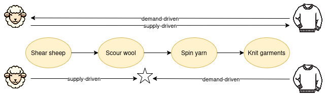
Planning from recipe
A plan can be generated from one or more recipes, or created without recipes. For repeatable processing, it makes a lot of sense to automate planning from recipes. Otherwise, plans can be entered directly.
If there are Recipe classes (which are optional), the planning uses only Recipe Processes that are defined in a Recipe. Or they can be generated directly from one or more Recipe Processes. In either case, they will find predescessor/successor Recipe Processes as needed.
Back-scheduling a plan from a Resource Specification or Recipe:
Start with a resource specification, or the primary output of a recipe, and a due date, find a recipe process with that output, generate the plan from the end item to its inputs, to the outputs leading the inputs, to their inputs, etc. This is called a "demand explosion", and is probably the most common method.
Forward-scheduling from a Resource Specification or Recipe:
Start with the inputs with no predecessors and a start date, generate the plan from the inputs to their outputs, to the inputs that want the outputs, etc..
Forward-scheduling from a Resource:
Start with an Economic Resource, and generate the plan based on the recipe of its Resource Specification. Examples:
Translation: start with a source document
Auto repair: start with an auto that needs repair.
Generating a plan involves scaling the recipe according to the demanded quantity or supplied quantity, depending on the direction. Usually recipes are defined with the smallest reasonable batch quantities.
Software that generates plans from recipes can actually be pretty smart. It can check for what is currently in inventory, as well as what is already planned to be consumed or produced in other plans on what dates, and schedule only what is needed needed. It can report what inputs there aren't enough of and can either generate a plan from a recipe that makes those or schedule trading for those components or ingredients. The scaling calculations can be made as complex as necessary, for example usually the resource quantities are just multiplied out, but the time duration of a process might be less than a straight multiplication. If there are offers for resources, the planning can take that into account and insert agents appropriately.
In addition, often plans are tweaked after generation from a recipe, depending on how firm and exact the recipe is. A manufacturing recipe might be more exact than a recipe for a more general business process. For these reasons, a plan is decoupled from the recipe that generated it in the vocabulary. It maintains only the references to the resource and process specifications that were supplied from the recipe.
Note that a plan can include sets of flows from more than one recipe. For example, below is a simplified diagram of a plan that uses two recipes. In this example, the flows are related. But sometimes plans contain multiple sets of processes, each from a different recipe, and each set of processes delivers a different resource. For example, a plan for a marketing campaign might include producing pamphlets, making a website, conducting a few events, each of which is a separate recipe with a set of connected processes.
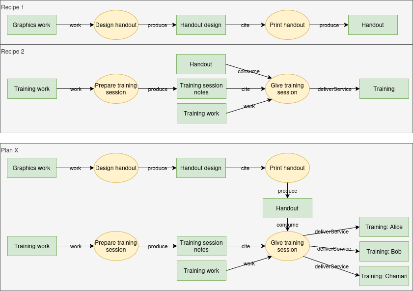
3.10 Recipes
This section is non-normative.
Not just for cooking...
Recipes are for:
documenting how to do something,
generating plans for people to do it together,
providing signals for coordinating their work.
Recipes contain all the info required to create a resource or provide a service. In ERP (Enterprise Resource Planning) terms, it’s a combination of bills of material and routings and suppliers. And the logic for generating plans from recipes is roughly the same as Material Requirements Planning.
If you encounter the same planning pattern more than once, and your software allows planning from recipes, you might want to capture the pattern in a Recipe so you don't need to cut and paste or re-enter the same information every time. Generally recipes are for repeatable processes.
Recipe patterns
These are two basic shapes of recipes. These recipe patterns can be used alone, or mixed and matched in the same recipe:
Manufacturing pattern: assemble or transform input resources into different output resource(s). This combines bills of material, processing instructions (routings), other inputs like labor and equipment requirements, and possible suppliers for the inputs. The manufacturing pattern creates recursive structures. In other words, if an input component has a recipe itself, that recipe will be incorporated into its parent, so you can view a processing tree from parents through children unto many generations. For example:
Assemble a robot from metal, wires, computer chips, software, etc.
Bake bread from flour, yeast, water, etc., using an oven.
A manufacturing recipe can be thought of like a tree shape, where the top of the tree produces the resource to be assembled, and the roots are all the components.
Workflow pattern: change the same resource into a different stage of the same resource. This describes a sequence of processes used to complete work on one resource. They create a series of stages that one resource will go through until it is finished. For example:
Translate a source document, edit the translation, format for publication, and publish.
Repair a bike.
Do quality testing on something that was created using the manufacturing pattern.
A workflow recipe tends to be more like a linear flow.
The examples above have to do with producing specific goods or services. Recipes can also be used to document more general business processes that an organization uses to produce more generally defined kinds of outputs. For example, an R&D activity might be hard to make a detailed recipe for using exact parts, because each time it is very different. But it does have general steps like researching existing technology, concept generation, experimentation, concept selection, refinement, testing, documenting the design.
How processes form longer flows
We know that processes are loosely connected to create a directed graph of connected processes. But how does it actually work? It works the same in recipes, plans, and tracking/tracing economic events. We're defining it here because it is the first place many will run into it.
The patterns:
The main way is by resource specification. An input flow of one process is loosely connected to an output flow of another process if the resource specification is the same. And that loosely connects the processes.
But a resource specification is not enough when there is a workflow pattern (see above) where the same resource (specification) goes into and out of a process. In this case, we need both resource specification and stage, with optionally state. For example a process may want a document as input, but only if it has been proofread already. Or a process may want a certain component as input, but only if it has been through the test process (stage) and has state "pass". In these cases, if the stage or state is needed, it will be included on the input flow. If not present on the input flow, then that signals that only the resource specification is needed.
Exchange recipes
You can also create Exchange Recipes. These are particularly useful when a flow of processes will also involve one or more exchanges based on the production flows. This often happens with delivering a service or work inputs, which might involve direct reciprocal flows, for example paying an agent for the work or the service. It also could happen when a material or digital resource is produced directly for another agent. Basically, any production flow which is an implied transfer can be involved directly in an exchange, and this applies to recipes also. There is also no reason not to have a recipe (or plan) made up only of exchanges, if there is such a use case.
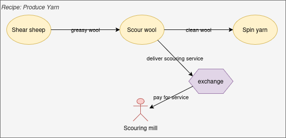
In the above diagram, the top recipe processes are the production steps to produce yarn. The agent coordinating those processes wants to agree with another agent to pay for scouring the yarn. The flow called "deliver scouring service" is both an output of the "Scour wool" recipe process and a clause of the recipe exchange agreement.
Recipe class
The Recipe class groups Recipe Processes, and optionally Recipe Exchanges, but is an optional construct. You will want a Recipe if different recipes can create the same resource specification output in different ways. It is also needed when some recipe processes are included in multiple recipes, like the Summer Milking and Winter Milking recipes below, where the only difference is some details in the milking process. Or you might elect to always have a Recipe just for documentation.
The Recipe class is not necessary if there is always only one choice in the instance for the next or previous recipe process in making any particular resource specification, that is if you want the plan from recipe logic to look for the next/previous recipe process from all the recipe processes in the instance. But we suggest you either use all Recipes or no Recipes as a network instance.
In the following simplified diagram, the yellow ovals are recipe processes. If they are named the same, that indicates the same instance of RecipeProcess.
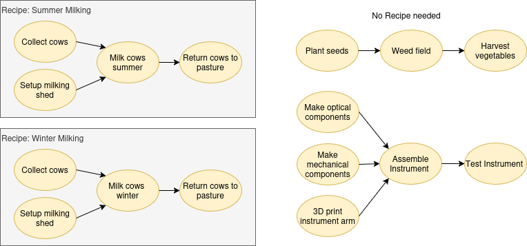
By-products and Co-products
A Recipe knows its primary reason for being, i.e what is created by this Recipe. As of now, it does not directly know its by-products and co-products. If needed, this can be found by interrogating the contents of the recipe input-process-output graph. This choice favors simplicity at this stage.
3.11 Location
This section is non-normative.
Spatial Location
Perhaps the original concept of location is a physical place. This could be a point, or some other geometry, from simple to complex. The main requirement in VF for a physical location tends to be for geographic mapping, which is usually a point on a map, but could be an area. It also could be used for things like locations of resources, many of which could be in one building. Managing space in a warehouse could be automated.
In VF, location tends to be on the edge of the model, thus is not modeled deeply. An agent can have a primary location, an economic resource can have a current location, and the flows can happen at a location. Certain economic events can also change the location of an economic resource. Our experience is this covers most of the economic needs for locations. Some implementations will want more than this, which can be added per implementation.
The location data itself is also fairly basic. The core is the latitude, longitude, and altitude, subclassed from the Basic Geo Vocabulary (WGS84). We have included some other descriptive information for human understanding. None of the information is meant to be globally unique identification of a spatial location, and the accuracy of the geometry should be what is needed by your application. Our definition is also more limited, since we focus on somewhat fixed locations. We also assume locations are specified relative to the Earth.
To accommodate needs for more complex spatial location definitions, we include a data reference to the extensive Geography information of the GEOSPARQL Specification, which can then be used for purposes not supported in the core VF.
Virtual Location
We support two kinds of virtual locations for economic resources, and more can be added as needs arise.
One is a URI location for economic resources that are electronic, such as documents, code or designs.
The other is a currency location for economic resources that are located in an account, crypto wallet, etc. The latter should be formatted according to the specific requirements of the type of currency.
For agents that do not have a physical location, implementations can use website or other agent information from other vocabularies.
3.12 Accounting
This section is non-normative.
Recording Basic Economic Activity
The Valueflows vocabulary is based on the REA ontology (Resources, Events and Agents) the ISO Accounting and Economic Ontology, which was evolved for that purpose.
Since all the data is recorded as the economic activity happens and is represented in its most basic form, you can get separate accounting views for: a network, each group in the network, each project, each individual. In other words, people in the network log events as they occur and the accounting Just Happens.
All of the views can emerge from subsets of the same data. Any standard (or non-standard) accounting report can be created.
Or potentially, views for a global value system economy (really).
See also Ecological Accounting.
Accounting views: independent vs dependent
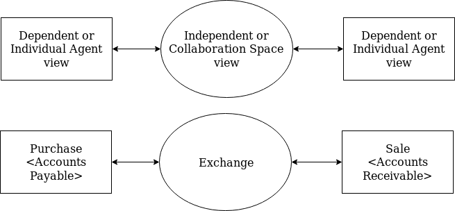
Conventional accounting always takes the view of an individual agent: often a company. REA, and Valueflows, take an independent view, sometimes called a “collaboration space” or economic network or supply chain view. At the same time, derived from the independent view, REA and Valueflows support each agent's own accounting view.
For example, from one agent's viewpoint, the exchange may be a "purchase", from the other agent's viewpoint, it might be a "sale". From the neutral viewpoint, it is an exchange of resources, with usually at least two flows of resources, from different directions.
For the individual agent’s accounting systems, assuming an Exchange of goods for money, when the goods are transferred from the seller to the purchaser, the purchaser’s Accounts Payable are increased (credited) and the seller’s Accounts Receivable are increased (debited). The independent view sees a transfer of goods from one agent to another.
While conventional accounting uses the individual agent view, larger-scale economic analyses and planning, like for networks, communities, and bioregions, use the independent view.
Accounting as in Accountability...
from peers to each other
from members to a network
from a network to the members
from one network to another
from a network to the community
from a network to the ecosystem
Accounting isn't always just counting beans. It will be important for community economies: what resources do we have, what happened with them, how are they doing? What resources do we need? Who needs what? Who can provide what? What waste have we generated and how can we improve?
But if you want to count beans...
The standard set of accounting reports are needed by many organizations. A standard General Ledger, Balance Sheet, and Income Statement can be generated automatically from Valueflows data. No need to create a Chart of Accounts or post double-entries, those can all be created by a computer program on request.
Moreover, General Ledgers and accounting reports can be created automatically for each agent in an economic network using the VF vocabulary. The accounting views use the Dependent or Individual Agent view of ValueFlows.
Accounting statements can also be updated instantly for each participant in any economic event as soon as the event is recorded. For example, consider an economic exchange, where one agent transfers some goods to another, and the other agent transfers some money in return. The inventory of the goods-providing agent will be instantly decremented, and the receiving agent's incremented. Likewise the money accounts of the money-providing and receiving agents will immediately change. Income statements, balance sheets, and cash flow reports can reflect the new changes immediately. The financial positions of each agent can always be up-to-date as of the last recorded event.
The difference between doing it procedurally and doing it declaratively:
A procedural program defines a step-by-step method of getting the desired results.
A declarative program describes the desired results and hands it to another program that can generate the desired results from your description. The person who desires the results writes much less code.
Making Corrections
It is standard accounting practice that recorded activity that affect financial and other accounting reports cannot be changed directly in case of error. That is because one cannot tell when reports could have been published containing that data, and many financial reports cannot be amended.
Valueflows allows for correction of an economic event with another economic event, which should be recorded with a corrects link to the original event. This gives flexibility to display the event as corrected, or as separate events, depending on the need. The quantity should be the amount to be added or subtracted from the original event quantity. So this works differently than the increment/decrement rules, and will be the only time negative quantities can be used. It is not required, but is often customary to completely "back out" or "reverse" the original record (i.e. if the quantity was 10, then the quantity of the correction record is -10, as of the date corrected); then the original event can be re-entered correctly with the earlier correct date and no need for the corrects link. Alternatively, the correction event could just record the difference, as of the date of correction, with the corrects link to the original.
If the original event was input to or output of a process, or was part of an agreement, then the correction event should contain those same relationships so it will appear embedded into the flow(s) where it belongs without worrying about the corrects link. The correction event should be recorded as of the date of the correction, though.
All events should record the computer-generated created date/time also, as this may be used in periodic reports to keep the events filtered properly without missing or double counting anything; or where it is important to be able to compare traces (for example) to verify representation of the same resource based on history. (This is also needed when events are allowed to be recorded after the fact, irrespective of corrections, which is true for many situations. That is, often the event date will be earlier than the created date.)
3.13 Ecological Accounting
This section is non-normative.
Why ecological accounting
There is increasing desire to account for "externalities" from human production and transportation processes, and certainly the need has always been there. Related, there are also more efforts to do "climate accounting" on a global level, to provide knowledge in the efforts to improve the situation, which is spiraling out of control on many levels - climate chaos, soil and biodiversity loss, uncontrolled emission of substances on the land and in the water toxic to life, etc.
There are many reasons this has not been part of the accounting paradigm, including interests of corporate players and tendencies of industrial era humans to think about "the environment" as something separate from us, from which we can extract resources without regard to the many interconnections. Although there are some efforts to give ecosystems rights relative to human impact, and helpful ways to think about the issues from indigenous sources and people working on the "commons", a large "paradigm shift" will be needed and there is much inertia and resistance.
As always, our goal is to give Valueflows the latitude to support both conventional and next economy accounting. The latter will more and more involve ecological accounting.
So, understanding there will be much more learned going forward in practice, we want to make Valueflows broadly supportive of these efforts. In general, this can be a step forward in being able to broaden our ability to do the accounting we need to do to confront the current climate and biodiversity challenges.
See also Accounting.
REA IPO resource flows
The Valueflows input-process-output REA resource flow model works very well for ecological accounting, with some broadening of our thinking about agents and resources, and what "economic" entails. If we think of "economic" as broader than human activity, which has tentacles into most if not all of the other ecosystems on earth, it becomes easier to consider "accounting" in light of flows to and from those ecosystems, all of which eventually affect human economies.
This rough diagram shows some of the flows for solar panel production. Silica dust is an output of the mining process, which gives mine workers silicosis. There are many additional flows here which could be detailed to go into and out of ecological ecosystems, affecting them and also humans.
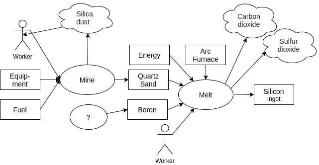
Economic Resources
We have thought of economic resources as having use value (and sometimes exchange value) to humans and ecosystems. If we broaden that to include "bad" as well as "good" resources, we can model more completely and accurately the resource flows that impact ecosystems including humans. It is also not very helpful to even think in terms of "bad" and "good" as part of the definition, since that is conditional. For example, CO2 is "good" for plants in a greenhouse, but "bad" pumped into the atmosphere, and some of the CO2 in the greenhouse will leak out, making it "bad"... yet it is the same substance.
Agents
We have defined Agents as people and organizations (formal or informal). If we go beyond human-centric thinking, we could conceive of Agents as other living things, and also as groups of other living things, or whole ecosystems. Those ecosystems could be of any size or complexity, and all types of agents could have various relationships between each other and their ecosystems. For example, a lake receives and provides many economic/ecological resources, for example nitrogen from farm runoff, water and habitat for living things.
This requires some things which are traditionally considered by humans to be resources, to be considered agents in their own right. We understand that some living things (say beef cattle being raised by a farmer) need to be accounted for as resources, and Valueflows will of course continue to support that. On the other side of the puzzle, we also realize that we could consider a human being as an ecosystem, given the microbiota that lives there and even influences behavior. So, the goal is to keep the model simple and flexible enough to support current practices, while also supporting continuing exploration and expansion of our thinking about agency within the global ecosystem of living beings.
But how can these non-human agents give input to human accounting systems? One way is through sensors; another is through human "representatives". Of course, this is all still unavoidably human-centric. Some ecological agents need human agents to represent them in human governance activities, similar to specific humans representing organizations. This idea has both supporters and opposition: Federal Judge Strikes Down Lake Erie Bill of Rights. And there are evolving experiments to refine how humans can act on behalf of ecosystems, and to include indigenous groups who have had responsibility going back centuries. There are many ethical, legal, and practical considerations, but we think it is important to support our human desire to account for climate change and for harm from externalities.
5. Appendices
5.1 Sample Use Cases
Here's a (big but not all-inclusive) list of possible applications that can be built using the Valueflows model. It's a big list for a relatively simple model. This is because the model, thanks to the many shoulders it stands upon, starting with REA, can be used for almost any economic application.
Production and creation:
manufacturing and assembly,
distributed manufacturing,
supply chains and economic networks,
fablabs and open hardware design,
inventory,
services,
organizational and administrative projects,
simple todo's,
CSA and Solawi,
transportation,
track and trace of resources,
digital product passport.
Exchange:
marketplace and e-commerce,
point-of-sale retail,
offers and needs publication and matching,
mutual credit and timebanks,
supply network purchasing,
alternative currencies,
barter and gift economies,
buyng clubs and consumer cooperatives,
reward distribution based on contributions,
direct distribution of resources.
Financing:
savings pools,
mutual credit financing.
Analysis and planning:
operational planning,
supply chain and network planning,
standard accounting,
climate accounting.
5.2 Algorithms Overview
This section is about what computer programs (or humans with pencil and paper and a lot of work) can do with Valueflows economic networks once they are constructed on the Web or in a database.
Network-based algorithms
Dependent Demand constructs schedules for operational economic networks from recipes
Many other scheduling algorithms can be used over the same recipes.
Gantt charts are a popular network schedule visualization.
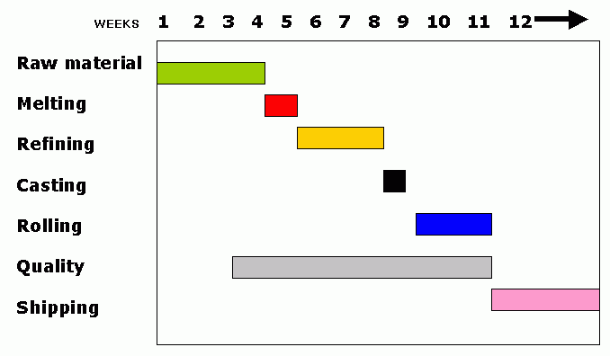
Critical Path is another scheduling algorithm that analyzes a network of processes to figure out the bottlenecks, the processes that need special attention.
Value Rollups summarize the total value of all inputs to the resulting output from a recipe.
Value Equations determine how income should be distributed according to contributions to a deliverable item.
Track and Trace follow the path of a resource forwards (to where it went) and backwards (where it came from, and what other resources went into it).
Provenance is like Trace, focusing on the path of a resource and all of the other resources that went into it.
Cash Flow is mostly about money, but could also apply to other resources, looking at the inflows and outflows on a timeline, historical in the past, forecasted in the future.
To trace: follow the completed path backwards from its current point to where it began... When you "trace" a cellphone call, you try to determine its origin... You go backward to the starting point.
To track: follow the emerging path forwards from your starting point to wherever the thing currently is... When you "track" a cellphone, you monitor [the starting] location ... and follow it wherever it goes...
One of the most-often used traces is to find the origins of health problems like mad cow disease and tainted drugs and food. In Valueflows terms, that would start with the product (economic resource) that caused a health problem, and trace back along the chain of resource flows to the source or sources of the product. Then it might be necessary to also track forwards from the source(s) to find everything else that might include that source(s).
It is also used when the provenance is useful for other information, like to determine the sustainability of the creation of a resource (like fossil fuel inputs, potential carbon implications, etc.), how healthy the inputs are, how local is the production and distribution, etc. Or when an agent is interested in what happens to a resource they created, for example what is the effect of their recycling efforts or material donations to an educational program.
Also, this logic is used in other features, like "contribution economy" calculations, where all contributions of various kinds over time can be found by tracing backwards from an end resource.
Valueflows query terminology
previous and next bring back the element one flow step backwards or forwards
track and trace bring back the whole resource flow tree forwards or backwards, starting with a resource or an output event
Briefly, to gather a whole track or trace, the previous or next methods should be used in recursive logic, traveling down the flow and each branch of the flow, when there are many inputs or many outputs.
Adding breadcrumbs on initial save
For the most part, the structure provides the causal order of the flows. But for some specific situations, such as repeated cycles referencing the same ProcessSpecifications, additional information should be saved on the EconomicEvent and EconomicResource to aid in obtaining consistent causal order. (Timestamps are not reliable in distributed systems.) The following is the hack we implemented, you may have a better one.
Add two new fields called previousEvent, one on EconomicResource and one on EconomicEvent. The previousEvent fields reference an EconomicEvent.
When a new event is created with a resourceInventoriedAs, the new event takes the resource's previousEvent value and puts it into the new event's previousEvent field, and puts the new event into the resource's previousEvent field.
Those previousEvent references provide breadcrumbs for tracking and tracing through ambiguous situations, see pseudocode below.
Trace logic
Where to start a trace
The "starting item" can be an EconomicResource or EconomicEvent. If you want to start at the present time, and trace everything that ever happened to the resource, start with the resource and the value of its previousEvent. If you just want to know how a resource was made, and what inputs went into it, start with selecting the output event where that resource was initially created, or if it is a stock resource, where it was last incremented.
Pseudocode
The following is included to give some idea of the logic required. It is not meant to reflect code, for example "null" could be "nil" or "none", and "list" could be any collection. It tries to cover all actions and scenarios, and has been tested in one installation, but is still meant as a suggestion.
EconomicResource "previous":
find all events that are process outputs and where the resource is resourceInventoriedAs
find all events that have the resource as toResourceInventoriedAs (all transfers and move)
find all raise/lower events that reference the resource as resourceInventoriedAs
return all of the above events
Process "previous":
return all events that are input to the process
EconomicEvent "previous":
if the event is output of a process
return the process
else if the event action is raise or lower, and the event's previousEvent is null
return empty list
else if resourceInventoriedAs of the event exists
return the resourceInventoriedAs resource
else
return empty list
trace (parameter: starting item)
initialize "flows", "visited", "contained", "modified", "delivered"
(list or similar, "flows" must be ordered)
add the starting item to "visited"
add the starting item to "flows"
if the item is an separate event
add the resourceInventoriedAs to "contained"
if the item is a modify event
add the resourceInventoriedAs to "modified"
if the item is a dropoff event
add the resourceInventoriedAs to "delivered"
call trace-depth-first-search (which will go recursively backwards through the tree)
return "flows"
trace-depth-first-search (parameters: "flows", "visited", "contained", "modified", "delivered", "savedEvent")
for the last item in "flows", get "previous" (defined above)
if that last item in "flows" is an event
save the previousEvent in "savedEvent"
order descending the "previous" items by id or other unique element (approximate time order is helpful)
for each of those items
put the last item in "flows" in the item's "parent" (facilitates showing as a tree)
if the "savedEvent" is one of those items
move it to the position where it will be processed first
else if the item that will be processed first is a resource in "visited"
put the "savedEvent" in the position where it will be processed first
for each of those items
if the item is not in "visited"
set "skip" to false
if the item is a pickup event
if the event's resourceInventoriedAs is in "delivered"
remove it from "delivered"
else
set "skip" to true
else if the item is an accept event
if the event's resourceInventoriedAs is in "modified"
remove it from "modified"
else
set "skip" to true
else if the item is a combine event
if the event's resourceInventoriedAs is in "contained"
remove it from "contained"
else
set "skip" to true
else if the item is an separate event
add the resourceInventoriedAs to "contained"
else if the item is a modify event
add the resourceInventoriedAs to "modified"
else if the item is a dropoff event
add the resourceInventoriedAs to "delivered"
if "skip" is false
add the item to "visited"
add the item to "flows"
call trace-depth-first-search
return "flows"
Track logic
Pseudocode
Again, the following is included to give some idea of the logic required. It tries to cover all actions and scenarios, but is meant as a suggested starting point, it has not been tested in code, nor even desk-checked. Rather it is a starting point that reverses the trace logic. When it has been tested, we will update here.
EconomicResource "next":
return all events where the resource is resourceInventoriedAs
Process "next":
return all events that are output of the process
EconomicEvent "next":
if the event is input of a process
return the process
if the event is output of a process
return the resourceInventoriedAs
if the toResourceInventoriedAs of the event exists
return the toResourceInventoriedAs
else
return an empty list
track (parameter: starting item)
initialize "flows", "visited", "contains", "modifies", "delivers"
(list or similar, "flows" must be ordered)
add the starting item to "visited"
add the starting item to "flows"
if the item is a combine event
add the resourceInventoriedAs to "contains"
if the item is an accept event
add the resourceInventoriedAs to "modifies"
if the item is a pickup event
add the resourceInventoriedAs to "delivers"
call track-depth-first-search (which will go recursively forwards through the tree)
return "flows"
track-depth-first-search (parameters: "flows", "visited", "contains", "modifies", "delivers", "savedEvent")
for the last item in "flows", get "next" (defined above)
if that last item is an event
find the next event by looking for the last item event in any event's previousEvent field
if it exists (would you ever get multiples???)
save it in "savedEvent"
else
remove the old "savedEvent" (???)
order the "next" items by id or other unique element (approximate time order is helpful)
for each of those "next" items
put the last item in "flows" in the item's "parent" (facilitates showing as a tree)
if the savedEvent is one of those items
move it to the position where it will be processed first
else if the item that will be processed first is a resource in "visited"
put the savedEvent in the position where it will be processed first
for each of those items
if the item is not in "visited"
set "skip" to false
if the item is a dropoff event
if the event's resourceInventoriedAs is in "delivers"
remove it from "delivers"
else
set "skip" to true
else if the item is an modify event
if the event's resourceInventoriedAs is in "modifies"
remove it from "modifies"
else
set "skip" to true
else if the item is a separate event
if the event's resourceInventoriedAs is in "contains"
remove it from "contains"
else
set "skip" to true
else if the item is an combine event
add the resourceInventoriedAs to "contains"
else if the item is a accept event
add the resourceInventoriedAs to "modifies"
else if the item is a pickup event
add the resourceInventoriedAs to "delivers"
if "skip" is false
add the item to "visited"
add the item to "flows"
call track-depth-first-search
return "flows"
Tracking identifier
Currently, often companies' internal flow information is not public, although in many countries they are required to be able to provide input and output information when needed in a medical emergency, without connecting all the dots internally. Also any organization can be missing resource flow data so that there are gaps in the flows, no matter the level of transparency.
For these reasons, tracking identifier (such as a serial number or a lot identifier) is currently used when food or medical tracing and tracking is required. And in VF, they can be used whenever there is missing resource flow information for any reason; or when many resources go in and out of one process, such as might happen in transportation.
Also note that lots get "spread out" into splits of a resource or different types of resources. For example, one recent product recall was of fungus medicine ingredient that was tainted with benzene. The producer needed to identify all of the products that the tainted ingredient went into, and then all of the many packages of the same medicine that have the same lot identifier, which stays attached to the individual packages wherever they go. All of those packages will need to be found and destroyed and the recipients can be reimbursed by the producer.
5.4 Dependent Demand
Dependent demand is one popular planning and scheduling algorithm for economic networks. It is used in Material Requirements Planning (MRP), for example. The algorithm traverses recipes to create schedules for economic processes.
Here is a long description of Dependent Demand. Below is a short version.
Basically, you traverse a graph of Recipe Processes backwards from the last Recipe Output, connecting Recipe Inputs with Recipe Outputs that have matching Resource Categories, and backscheduling all the processes and resource requirements based on estimated process durations.
Take each request for quantities of Recipe Resource as a demand and start the traversal.
Start:
First check for onhand and available Economic Resources, or previously scheduled output Intents, that are not yet allocated to any demand.
Allocate any that you find to the highest priority demand (where highest priority usually means earliest delivery date). (Those are soft allocations, known only in the computer system.)
For demands that find no or insufficient available inventory or output Intents, look for a Recipe Process that can create some. If you can't find a Recipe Process, suggest a purchase.
(Note: a Recipe is not really a thing, it's just a graph - although in a future release it will be a thing. A requested Recipe Resource may have one or more Recipe Processes that can create some Resources of that specification. Each of those Recipe Processes may have Recipe Flow inputs that specify some other Recipe Resources, and each of those Recipe Resources may have Recipe Processes that can create them, and so on, recursively, until you can't find any more creation Recipe Processes. If you find more than one creation Recipe Processes, you will need some way to select one.)
When you find a Recipe Process,
then schedule a planned Process based on the Recipe Process, with an output Intent of the required quantity of the demanded Recipe Resource. Backschedule so that the end of the process meets the timing requirements of the inputs to the processes that will be waiting for them.
Then schedule input Intents for each of the recipe inputs of that Recipe Process, with their quantities scaled to the quantity of the planned output.
Then start over from the Start with each of those new input Intents as the demand.